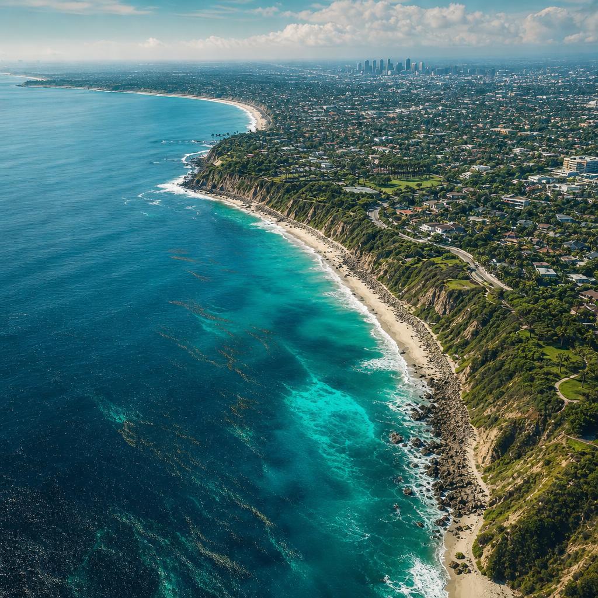
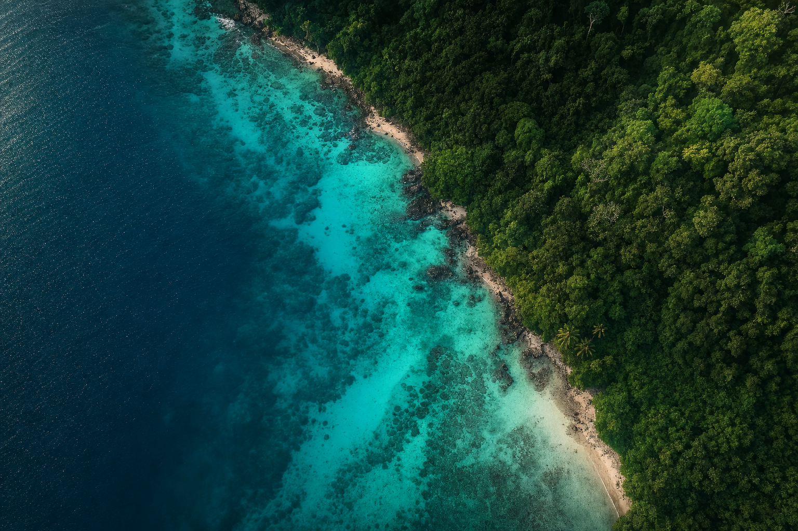
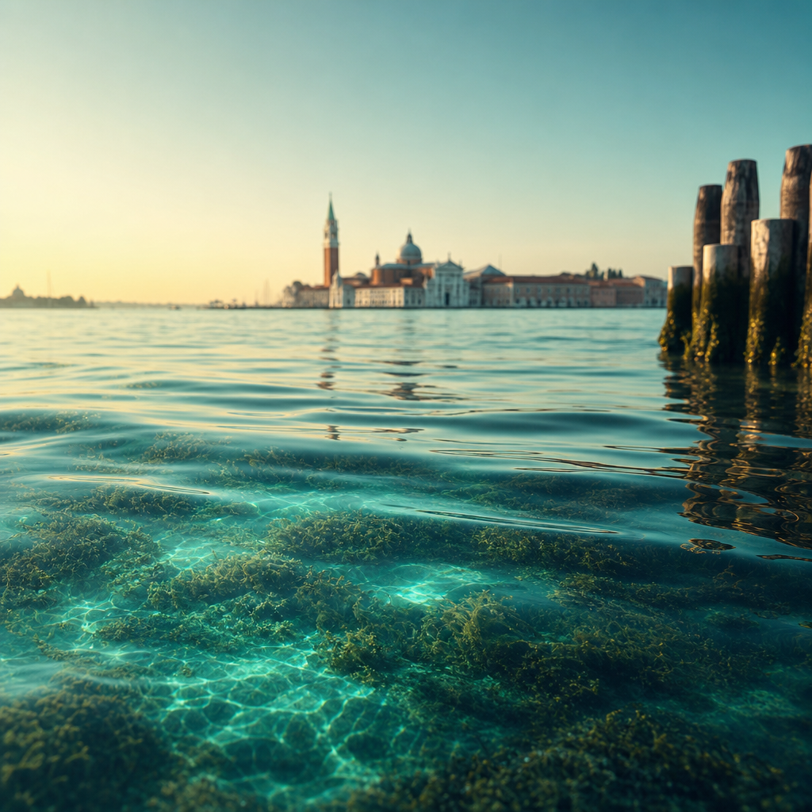
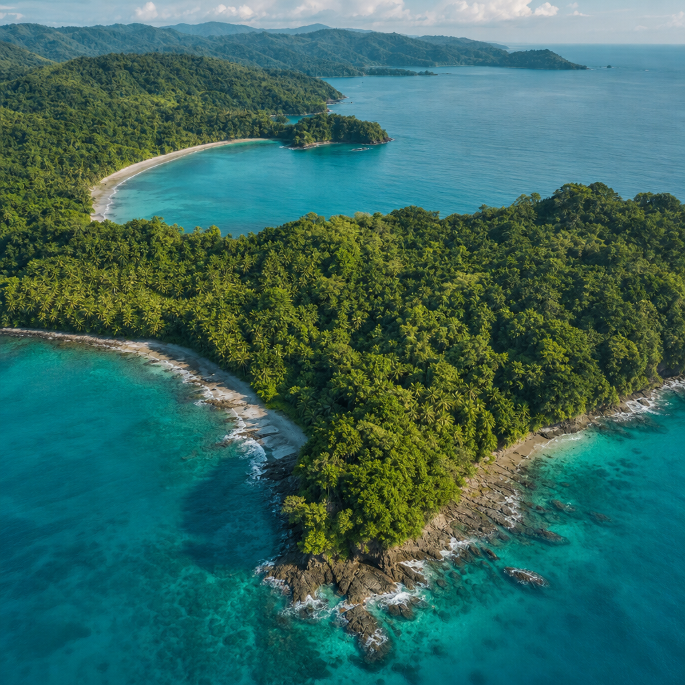
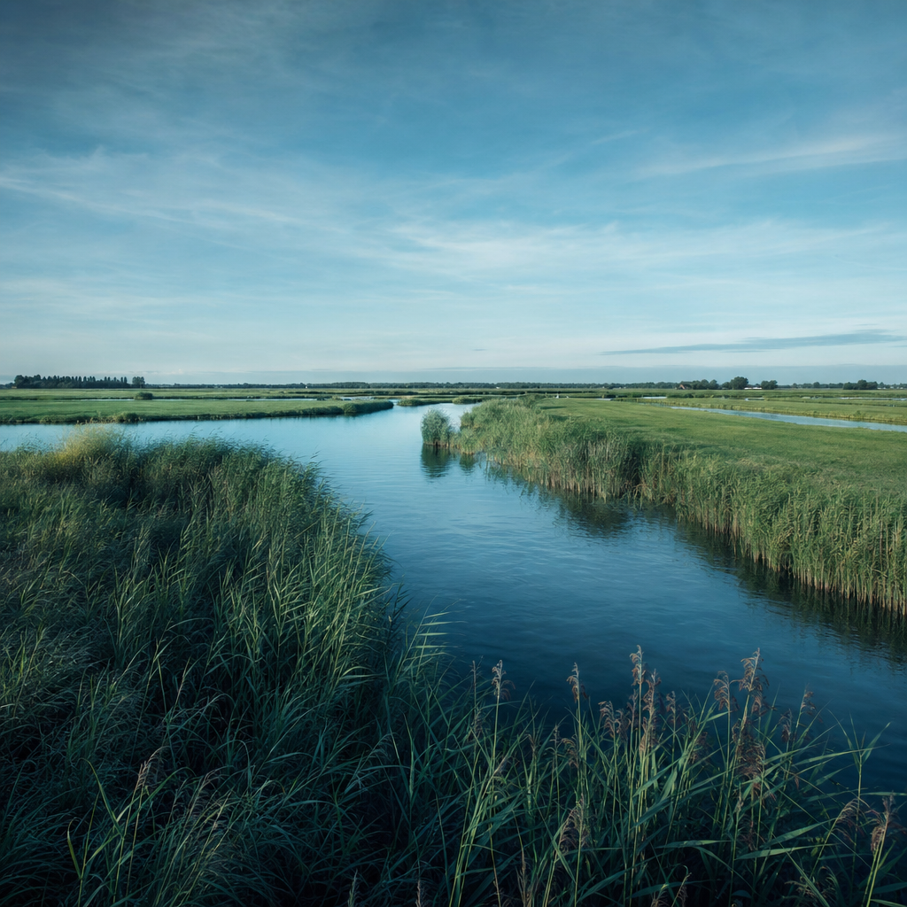
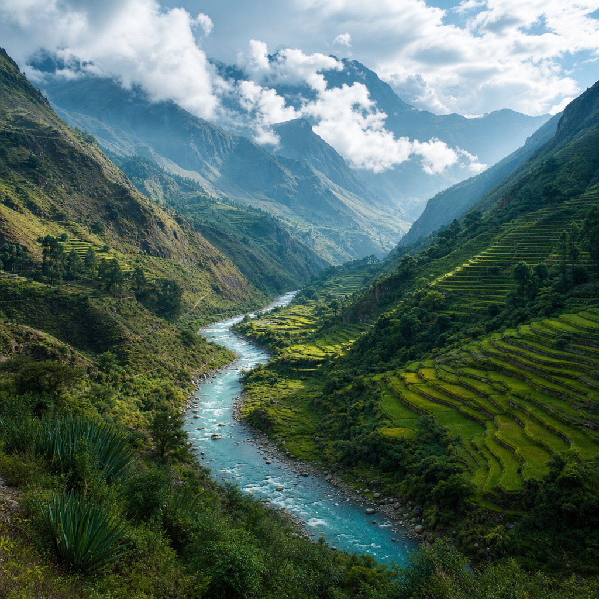
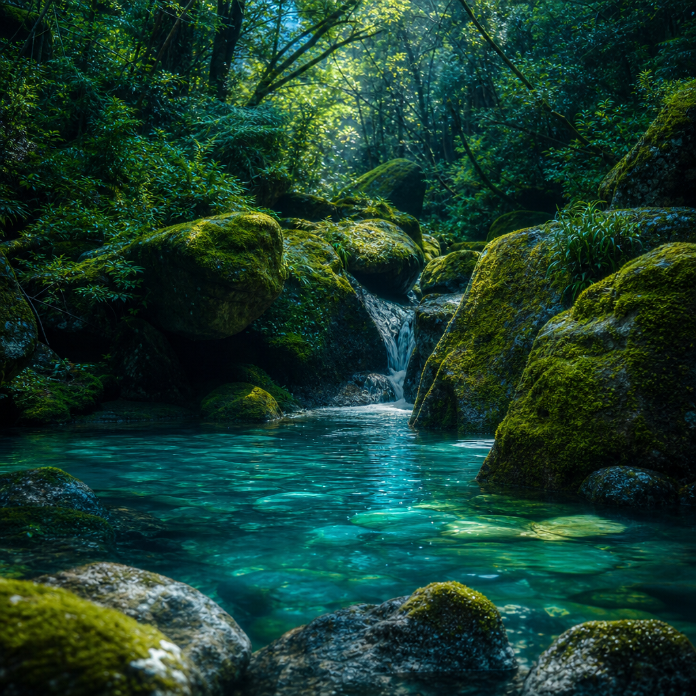
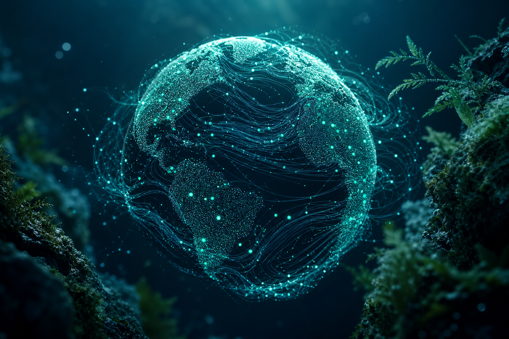

01

Marine & urban coast
Los Angeles, USA
Students sample tide pools, kelp beds, and harbor waters to map biodiversity along one of the world's busiest coastlines.

The World Genome Atlas
Our Atlas is a growing global network of biodiversity observations. Explore where students and partners are collecting environmental DNA, and discover how every local project adds a thread to a shared picture of the living world.
Where we work
From the Urubamba River winding through Peru’s Sacred Valley to the Pacific coast of California, each cohort reads the eDNA of its own ecosystem using the same field protocols and portable sequencing. Hover a marker to see the site.
Pilot locations
Local ecosystems, local students, one common scientific framework. Here is where the first observations are being recorded.

Marine & urban coast
Students sample tide pools, kelp beds, and harbor waters to map biodiversity along one of the world's busiest coastlines.

Brackish lagoon
The tidal lagoon offers a living laboratory where freshwater meets the sea, tracking species that move between two worlds.

Tropical forest & coast
Where dry forest meets the Pacific, cohorts sequence eDNA from rivers and reefs in one of the planet's biodiversity hotspots.

Freshwater wetland
Reed-lined canals and polders become study sites for the genetic record of a landscape shaped by water for centuries.

Andean river system
High-altitude rivers carry the eDNA of a unique montane ecosystem, sampled by students alongside their own communities.

Temperate forest stream
Clear mountain streams and mossy forests reveal hidden amphibians, fish, and microbes through quiet water samples.
From local to global
A single water or soil sample tells a story about one place and one moment. Pooled together and read with shared methods, thousands of those stories begin to reveal patterns that no classroom could see alone.
Because every cohort follows the same protocols, observations stay comparable across oceans, watersheds, and continents. Local data becomes a contribution to a common, open understanding of biodiversity and how it is changing.

What comes next
As the network grows, the Atlas will become an interactive platform where anyone can explore biodiversity discoveries, track environmental change, and follow the scientific contributions of students across ecosystems and continents.
Species detections, sequencing results, and field notes mapped to the exact places they were found, layer by layer.
Returning to the same sites season after season turns single observations into time series that reveal how ecosystems shift.
Every entry is student-generated and method-consistent, building an open record that researchers and communities can rely on.